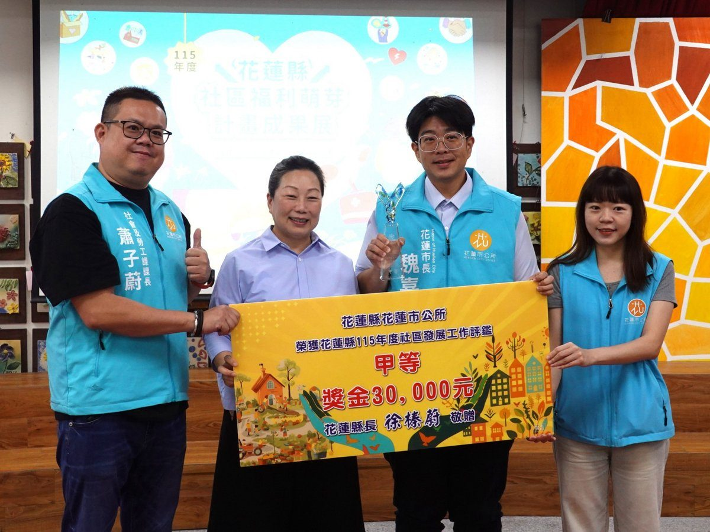

花蓮社區福利萌芽座談 民運金卓越碧雲莊智慧共生

可樂電子報小編/編輯
花蓮市長魏嘉彥今（8）日出席縣府於國興裡活動中心舉辦的「115年度花蓮縣社區福利萌芽計畫靜態成果座談會」。現場有民運社區分享獲衛福部金卓越獎的歷程，碧雲莊社區則談智慧共生，花蓮市公所也在縣府115年度社區發展工作評鑑中獲公所組甲等，獲頒新臺幣3萬元獎金。

這場座談會由花蓮縣政府社會處主辦、社團法人花蓮縣牛犁社區交流協會承辦，以「萌芽成路～社區帶路的花蓮福利行動」為主題。花蓮縣長徐榛蔚偕社會處長黃舒儀主持，魏嘉彥市長則與社勞課長蕭子蔚出席。現場除了表揚評鑑績優單位，也頒發感謝狀給15位完成高齡人才培訓課程的學員，鼓勵他們將所學帶回社區，投入在地服務。
魏嘉彥表示，最瞭解社區需要的，是每天生活在社區的居民。哪位長輩最近比較少出門、哪位鄰居有一手好手藝，往往都是在平時走動、聊天時慢慢發現的。他感謝社區幹部與志工長年關心街坊大小事，也期盼各社區多邀請年輕人和新住進來的鄰居一起參與，讓需要陪伴的人找得到伴，有一技之長的人也有機會出一分力，市公所會持續聽取社區的想法，協助連結所需資源，讓更多居民能在熟悉的地方彼此照應。

民運社區發展協會推動社區深耕計畫，代表花蓮縣參加衛生福利部社區金卓越選拔，榮獲卓越獎。協會總幹事謝美智在座談會中分享推動社區工作的歷程，並在分組交流時與其他社區夥伴面對面討論，讓有意參與選拔的社區有機會就實務問題交換經驗。

參與衛福部「智慧共生社區推動計畫」的碧雲莊社區，則從一張點券談起。社區發展協會執行長劉洪黎吟表示，碧雲莊從民國108年試行社區貨幣，109年推動志工福利點券，112年盤點社區人力資源，逐一瞭解居民有哪些專長、能提供什麼服務。到了113年，社區與大學攜手開發「雲幣App」，經過反覆修正、教學與推廣，最希望能在今年讓大家真正「用起來」。

劉洪黎吟舉例，有人衣服需要修改，就有擅長針線活的鄰居可以幫忙；有人想找個伴聊聊天，也有居民願意花時間陪伴、聆聽。從分享技能到提供二手物品，居民可以透過雲幣App提出需求，也能藉由服務累積雲幣，讓每個人都有接受幫助和付出所長的機會。
碧雲莊也逐步將生命整理師、新移工「天涯若比鄰」、AI健身俱樂部及小小自由圖書館，與雲幣互助機制串連起來。其中，「天涯若比鄰」邀請移工朋友透過影像記錄日常，讓被照顧者與家人有機會從照顧者的視角看見熟悉的生活，也看見彼此在照顧關係之外的興趣與能力。

📸 更多現場紀實影像


🌟 掌握花蓮在地第一手資訊・歡迎訂閱追蹤
深度紀實報導、在地精采影音專題，第一時間接收最新消息！